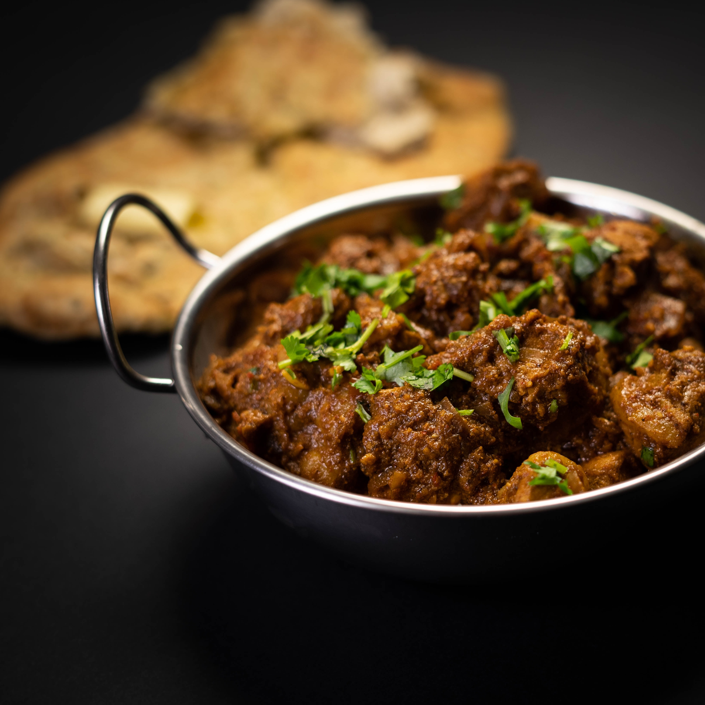

Lamb Rogan

Lamb Rogan was one of the first curries i ever tried. As a curry novice at the time, i liked how mild it was. It gently allowed me to explore other curries on the menu while always being a reliable curry to fall back on.
Ingredients
- 1 Tbsp Garlic/Ginger Paste
- 2 Fresh Tomatoes Diced
- 1/2 Onion Diced
- 30g Red Pepper
- 2 Tsp Mix Powder
- 1/2 Tsp Cumin Seeds
- 1 Tsp Dried Methi
- 1/2 Tsp Tandoori Powder
- 1/2 Tsp Kashmiri chilli Powder
- 2 Tbsp Tomato Puree (Diluted with water)
- 1/2 Tsp Salt (To Taste)
- 8 Pieces Pre cooked Lamb
- 2 Cardamom Pods
- Fresh Coriander to Garnish
- 1 Tomato Quartered
- 1/4Tsp Garam Masala (Optional)
- Base Gravy
Home